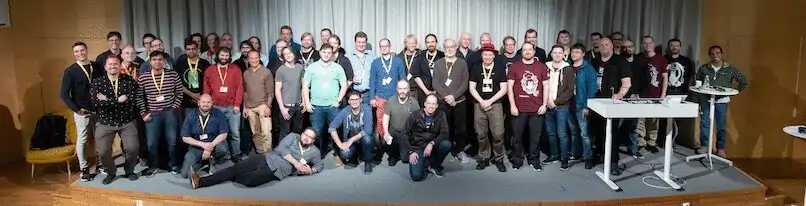
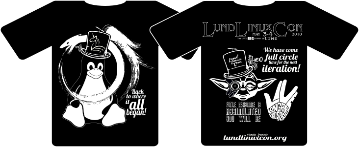
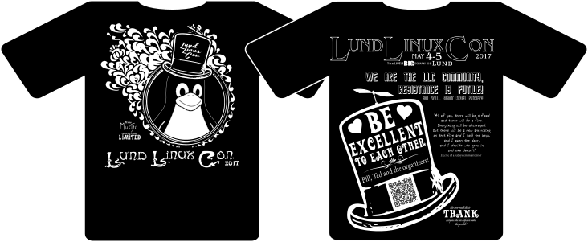
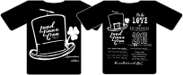
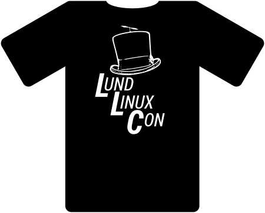

follow
| L | UND | L | INUX | C | ON |
on
Contact us at lund-linuxcon-crew-AT-googlegroups.com or on #lundlc at libera.chat
| L | UND | L | INUX | C | ON |
| May 12-13 | 2022 | ||||
| L | UND | L | INUX | C | ON |
Contact us at lund-linuxcon-crew-AT-googlegroups.com or on #lundlc at libera.chat
So take two, I do realise that the first version of the changes wasn't that great... but also, doing quick changes between all the other things that should be done.... Is... not helping... creatively ;)
LLC is a "half open" conference. This means that while we're formally invitation-only, it's very easy to get an invitation!
All we ask for is that you have some interest in the Linux kernel from a technical perspective.
If you would like to join the conference, please use this contact form with a short summary of who you are, and your relationship (if any) with the Linux kernel. Assuming everything is fine you'll get an invitation link back shortly
LLC 2019 has come and gone, we had fun and we hope you did as well!(sorry, using webp since it's ~300KB while gif was 1.2MB) |
Tries to add structure to chaos, atleast during our meetings!
Is on a quest in the blocklayer when he's not teaching about the linux kernel
We've seen him sending patches, but now he seems to have mounted lkml read-only. We are still waiting for more patches :)... oh, and the one responsible/to-blame™ for the webpage and t-shirt designs
building the Open-Channel SSD ecosystem on Linux. Main developer of LightNVM's open source Flash Translation Layer (pblk). Interested in NAND and next generation non-volatile memories
Long time Unix and Linux developer, maintainer of the Axis CRIS port of Linux from 2008 to it's removal in 2018. Working with Linux kernel drivers and debugging for Axis SoC
We claim that it's a really interesting story
Is working on getting things upstream!
Linux promoter at Volvo Cars, previously Linux Kernel Gfx developer at Intel Open Source Technology Center, and before that driving the "Linuxification" of mobile platforms at Ericsson and ST-Ericsson from a multimedia perspective
involved in Linux audio, and formerly employed by Canonical
2019 -- Lion? Lyon?Day one - 2019-05-09 |
||
| Presenter | Presentation | |
|---|---|---|
| Toke Høiland-Jørgensen | verview of the bufferbloat mitigation efforts in the kernel WiFi stack; status and ongoing work | |
| Uladzislau Rezki | Improving KVA/VMAP allocator in Linux kernel (merged in 5.2) | |
| Matthias Brugger | kdump/kexec internals | |
| Andy Polyakov | It's all speculative [or on problems with speculative instruction execution in contemporary processors]. | |
| Thomas Gleixner | Mopping up kernel messes one at a time, this time: licensing | |
Day two - 2019-05-10 |
||
| Presenter | Presentation | |
| Jesper Dangaard Brouer | XDP As a building block for other FOSS projects | |
| Javier González | XDSP: eXpress Data Storage Path | |
| Klaus Jensen | Binary Index and Journal Embedding in The Linear Tape File System | |
| Daniel Baluta | Sound Open Firmware with a focus on i.MX integration | |
| Damien Le Moal | RISC-V | |
| Matias Bjørling | ZNS - Zoned Namespaces | |
Lightning talks: | ||
| Hans Holmberg | LZBD - A new, zoned, lightnvm target | |
| Robert Fekete | A Security Gateway Based on Linux or anything else? | |
| Abel Vesa | imx8mq: cpuidle: GIC wake_request workaround in kernel and ATF (Abel Vesa) | |
2018 - Ouroboros-Unicorn editionDay one - 2018-05-03 |
||
| Presenter | Presentation | |
| Johan Hovold | The serial device bus | |
| Philippe Bonnet | Near data procéssing and it's implications for Linux | |
| Hans Holmberg | PBLK - a guided tour | |
| Martin Hell | The SECONDS project | |
| Robert Fekete and Joakim Nordell | Security in cars | |
Day Two - 2018-05-04 |
||
| Presenter | Presentationt | |
| Linus Walleij | Maintaining really old ARM systems | |
| Niklas Cassel | An introduction to PCIe | |
| Jesper Dangaard Brouer | XDP - now with redirects | |
| Björn Töpel | AF_XDP: An order of magnitude faster packet processing with standard Linux | |
| Simon A. F. Lund | Presentation + Discussion: Testing | |
| Octavian Purdila | Upstreaming the linux kernel teaching project | |
2017 - Mucha editionThe official programDay one - 2017-05-04 |
||
| Presenter | Presentation | |
| Hans Holmberg | The Open Kernel Teaching Project | |
| David Herrmann & Tom Gundersen | BUS1 | |
| Linus Walleij | Uncle Blocklayer | |
| Jesper Dangaard Brouer | Linux Kernel: eXpress Data Path (XDP) for DDoS protection | |
| Christoffer Jerkeby | Security in DevOps | |
| Julia Lawall | Coccinelle | |
| Iago Abal | Finding Non-Trivial Double-Lock Bugs in Linux Device Drivers with EBA | |
Day two - 2017-05-05 |
||
| Christoffer Dall | The design and implementation of KVM/ARM | |
| Mian Yousaf Kaukab | openSUSE hardware enablement | |
| Thomas Gleixner | The anatomy of Linux Realtime | |
| David Henningsson | Low latency audio through core isolation | |
| Robert Fekete, Gunnar Andersson | Linux and cars, and GENIVI Alliance introduction by Gunnar | |
| Krister Walfridsson | Getting more performance out of GCC | |
Lightning talks |
||
| Patrik Åberg | The DMCE Project (Did My Code Execute) | |
| Rabin Vincent | Kninja - building kernels faster | |
2016 - Beerlin editionThe official programDay one - 2016-05-12 |
||
| Presenter | Presentation | |
| Robert Fekete - intel_otc | ChromeOS explained | |
| Linus Walleij - linaro | IIO kernel | |
| Daniel Baluta - intel_otc | IIO Android HAL | |
| Mikael Persson | Video for linux | |
| Patrik Jakobsson | Facetime HD driver for linux | |
| Daniel Baluta | Linux kernel programming undergraduate course | |
| Fredrik Hugosson - axis | ACoC | |
| Constatin Musca | Brillo | |
Day two - 2016-05-13 |
||
| Presenter | Presentation | |
| Octavian Purdila - intel_otc | Linux kernel as a library | |
| David Henningsson | DKMS - Dynamic Kenrel Module Support | |
| Fabrizio Demaria | Security of Multipath TCP | |
| Andy Polyakov | OpenSSL | |
| Johan Hovold | Greybus | |
| Matias Bjørling | Open-channel solid state drives | |
| Daniel Baluta | Outreachy | |
| Krister Walfridsson | GCC | |
| Joakim Nordell | TCPDUMP | |
2015 - Leprechaun editionThe official programDay one - 2015-05-07 |
||
| Presenter | Presentation | |
| Martina Maggio - lth | rt-bench: a tool for profiling schedulers implmentation for real-time applications | |
| Rabin Vincent - axis | ftrace | |
| Robert Fekete - intel_otc | Linux kernel graphics, past present, and future + what did android drag in? | |
| Kim Højgaard-Hansen - prevas | Realising efficient industrial linux development | |
| Hans Holmberg - intel_otc | Devicetree vs ACPI - A tale of two trees | |
| Per Persson - ericsson | Calvin - a platform for IoT development - available on GitHub | |
| Hans Holmberg & Anders Nilsson - intel_otc | Minnowboard MAX & Edison dev boards | |
Day two - 2015-05-08 |
||
| Presenter | Presentation | |
| Octavian Purdila - intel_otc | Shaping the linux kernel MPTCP implementation thowards upstream acceptance | |
| Joakim Bech - linaro | Trustzone | |
| Mikael Lindberg - axis | Better CPU governor joint project SONY/LU | |
| Christoffer Jerkeby | The python-wifi API & the wifirssi tool | |
| David Henningsson | HDA-jack-retask | |
| Julian Coccia - ericsson | FOSS handling | |
| Javier González | Linux kernel abstractions for open-channel solid state drives | |
2014 - kerneval editionThe first ever LLC Day one - 2014-05-19 |
||
| Presenter | Presentation | |
| Linus Walleij - linaro | Kernel maintenance & git | |
| Ulf Hansson - linaro | The MMC subsystem | |
| Hans Holmberg - intel_otc | Tidying a patch mountain | |
| Julian Coccia - ericsson | Ericsson FOSS process | |
Day two - 2014-05-20 |
||
| Presenter | Presentation | |
| Jesper Nilsson - axis | Doing it wrong | |
| David Henningsson - canonical | Audio stack introduction | |
LLC 2019 - sponsored by Linaro |
LLC 2018 - sponsored by cnexlabs |
|  |
LLC 2017 - sponsored by viendi |
|  |
LLC 2016 - sponsored by fingerprints |
 |
LLC 2015 - sponsored by Axis |
|  |
LLC 2014 - sponsored by Hans |
|  |
The Lund Linux Conference (LLC) is a small, technical conference with focus on serving and building the local Linux community - a chance for Linux developers to meet, learn and get to know each other.
The community now stretches beyond Lund and we have a good bunch of people from Denmark as regulars, as well as people we’ve met from all over the world.
The idea for a conference in Lund was hatched, like all good conspiracies, over beer in a dungeon, during the 2013 Embedded Linux Conference in Edinburgh. After realizing that surprisingly many people from the Lund region were regularly going to the same Linux conferences all over the world, Hans pitched the idea to the rest of the Lundensians of doing a small, yearly event in Lund. How hard could it be? We did not know how to do this, but saw no real reason why this would not work out beautifully. At least it could cut down on travelling costs.
After meeting up with some old friends at the Linaro office in Lund over glüewine and home baked cookies, the first conference crew was quickly formed with people from Linaro, Intel OTC, Axis and Ericsson, and the first conference was held in May 2014. It turned out we had a lot of kernel developers in the area, gathering 40 people at the event. Afterwards, we immediately decided to do it again, bigger and better the next year... and the rest is history :)
We still really don’t know what we’re doing, but it seems to be working. The community is growing and we now have trouble squeezing in all the awesome content we receive every year. We’re keeping true to the first guidelines we established the first year - a single-track, invite only, kernel-centric, free event focused on (technical) content over form.
LLC is dedicated to providing a harassment-free conference experience for everyone. We do not tolerate harassment of conference participants in any form. Conference participants violating these rules may be sanctioned or expelled from the conference at the discretion of the conference organizers.
Participants asked to stop any harassing behavior are expected to comply immediately
If a participant engages in harassing behaviour, event organisers retain the right to take any actions to keep the event a welcoming environment for all participants. This includes warning the offender or expulsion from the conference.
Event organisers may take action to redress anything designed to, or with the clear impact of, disrupting the event or making the environment hostile for any participants.
We expect participants to follow these rules at all event venues and event-related social activities. We think people should follow these rules outside event activities too!
If someone makes you or anyone else feel unsafe or unwelcome, please report it as soon as possible. Conference staff can be identified by special badges and will introduce the whole conference. Harassment and other code of conduct violations reduce the value of our event for everyone. We want you to be happy at our event. People like you make our event a better place.
You can make a report either personally or anonymously.
You can make an anonymous report here.
We can't follow up an anonymous report with you directly, but we will fully investigate it and take whatever action is necessary to prevent a recurrence.
You can make a personal report by:
When taking a personal report, our staff will ensure you are safe and cannot be overheard. They may involve other event staff to ensure your report is managed properly. Once safe, we'll ask you to tell us about what happened. This can be upsetting, but we'll handle it as respectfully as possible, and you can bring someone to support you. You won't be asked to confront anyone and we won't tell anyone who you are.
Our team will be happy to help you contact hotel/venue security, local law enforcement, local support services, provide escorts, or otherwise assist you to feel safe for the duration of the event. We value your attendance.
Based on this anti-harassment policy